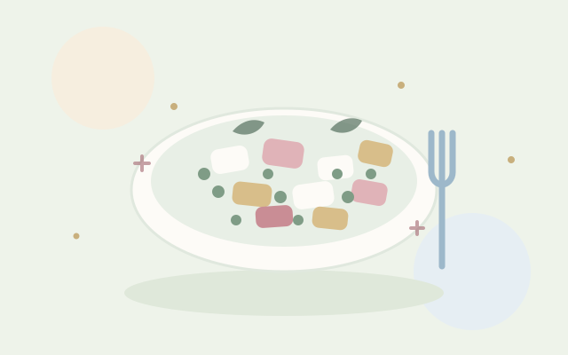
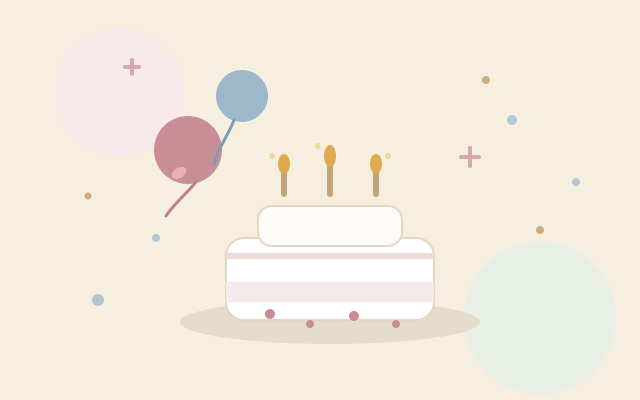
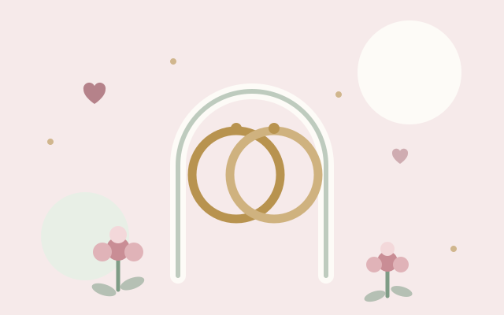
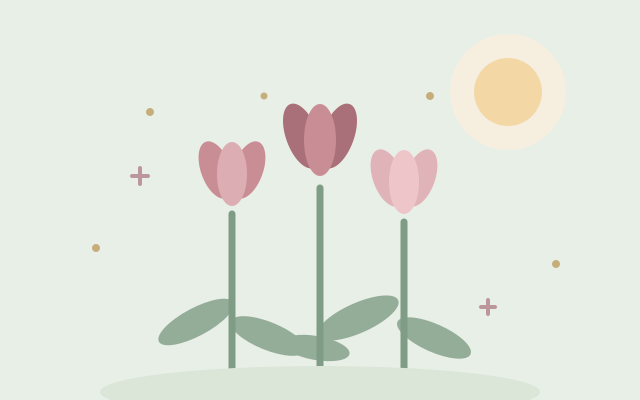
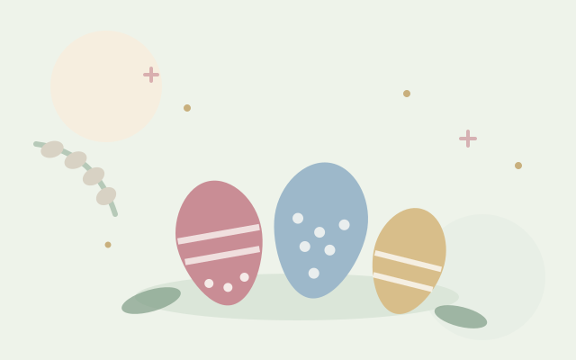
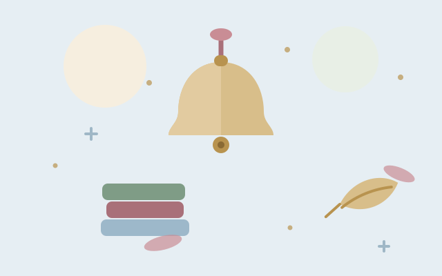

Новый год 2027
Меню на 12 человек: канапе, закуски, рыбный и мясной салаты, два горячих блюда, список продуктов и план подготовки по дням.
Открыть страницуКаталог праздников · без интернета
Праздники и события
Спокойный каталог идей: проверенные меню, точные списки продуктов и планы подготовки. Выберите праздник — всё остальное уже собрано на его странице.
7 праздников
Меню на 12 человек: канапе, закуски, рыбный и мясной салаты, два горячих блюда, список продуктов и план подготовки по дням.
Открыть страницу
База салатов на Новый год: состав с граммовками, пошаговое приготовление и советы. Данные хранятся в JSON.
Открыть страницу
Сценарий вечера, торт со свечами, украшение комнаты и игры для гостей — от малышей до взрослых.
Скоро Страница готовится

Чек-лист подготовки, банкетное меню, декор и тайминг дня — чтобы ничего не забыть в самый важный день.
Скоро Страница готовится

Идеи подарков, весенний стол и букеты своими руками: тюльпаны, мимоза и нарциссы.
Скоро Страница готовится

Кулич, творожная пасха, окрашивание яиц и светлое застолье для всей семьи.
Скоро Страница готовится

Букет первокласснику, сборы в школу и маленький семейный праздник после линейки.
Скоро Страница готовится
Ничего не найдено. Попробуйте другой запрос или сбросьте фильтры.
Страницы открываются двойным кликом по index.html.
Стили, картинки и скрипты лежат внутри проекта — ни одного
внешнего запроса. Эти же файлы отдаёт GitHub Pages.
css/ — стили страницjs/ — скриптыimages/ — иллюстрацииfonts/ — шрифтыnew_year/ — страница праздникаbirthday/.index.html, стили — в css/.